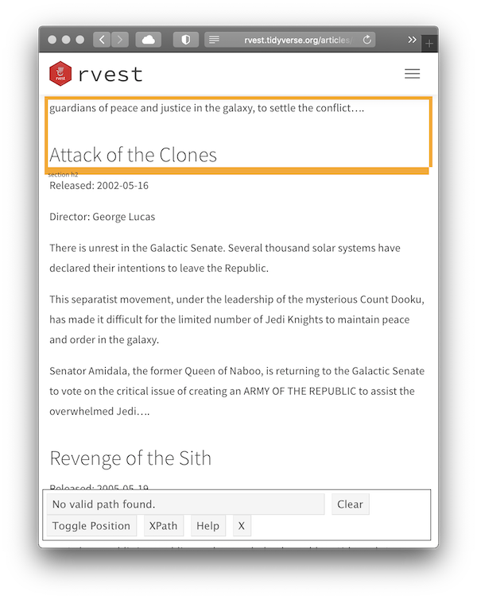
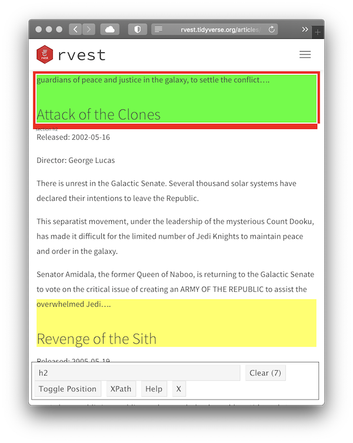
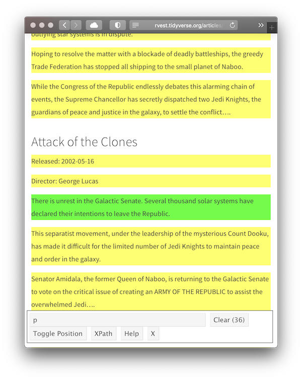
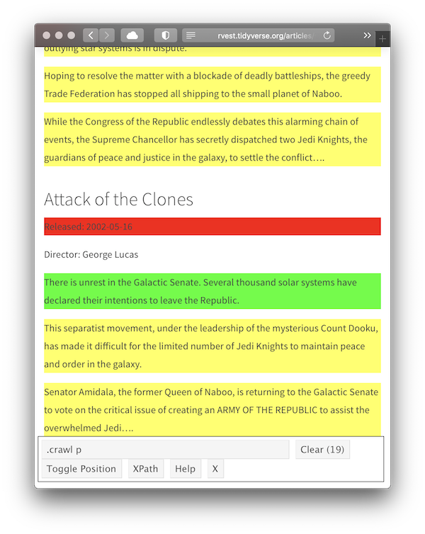

install.packages("rvest")Pre-lecture materials
Acknowledgements
Material for this lecture was borrowed and adopted from
Install new packages
Before we begin, you will need to install the rvest package
Now we load a few R packages
library(tidyverse)
library(rvest)Learning objectives
Learning objectives
At the end of this lesson you will:
- Learn the basics of web scraping
- Explore the
rvestR package for scraping data from the web
Introduction
rvest is an R package that helps you scrape (or harvest) data from web pages.
It is designed to work with magrittr to make it easy to express common web scraping tasks, inspired by libraries like beautiful soup and RoboBrowser.
We will begin with a quick overview of web scraping basics followed by demonstrating the rvest package.
Web scraping 101
In this section, we will first learn the basics of HTML and how to use CSS selectors to refer to specific elements, then you will learn how to use rvest functions to get data out of HTML and into R.
HTML basics
HTML stands for “HyperText Markup Language” and looks like this:
<html>
<head>
<title>Page title</title>
</head>
<body>
<h1 id='first'>A heading</h1>
<p>Some text & <b>some bold text.</b></p>
<img src='myimg.png' width='100' height='100'>
</body>HTML has a hierarchical structure formed by elements which consist of a start tag (e.g. <tag>), optional attributes (id='first'), an end tag (like </tag>), and contents (everything in between the start and end tag).
Note
A number of tags (including <p> and <li>) don’t require end tags, but I think it’s best to include them because it makes seeing the structure of the HTML a little easier.
Elements
All up, there are over 100 HTML elements. Some of the most important are:
Every HTML page must be must be in an
<html>element, and it must have two children:<head>, which contains document metadata like the page title<body>, which contains the content you see in the browser
Block tags like
<h1>(heading 1),<p>(paragraph), and<ol>(ordered list) form the overall structure of the page.Inline tags like
<b>(bold),<i>(italics), and<a>(links) formats text inside block tags.
If you encounter a tag that you have never seen before, you can find out what it does with a little googling.
I recommend the MDN Web Docs which are produced by Mozilla, the company that makes the Firefox web browser.
Contents
Most elements can have content in between their start and end tags. This content can either be text or more elements. For example, the following HTML contains paragraph of text, with one word in bold.
Hi! My name is Stephanie.
The children of a node refers only to elements, so the <p> element above has one child, the <b> element. The <b> element has no children, but it does have contents (the text “name”).
Some elements, like <img> can’t have children. These elements depend solely on attributes for their behavior.
Attributes
Tags can have named attributes which look like name1='value1' name2='value2'.
Two of the most important attributes are id and class, which are used in conjunction with CSS (Cascading Style Sheets) to control the visual appearance of the page.
These are often useful when scraping data off a page.
Reading HTML with rvest
You will usually start the scraping process with read_html(). This returns a xml_document object which you will then manipulate using rvest functions:
Note
This xml_document class comes from the xml2 package, which is a low-level package that rvest builds on top of.
html <- read_html("http://rvest.tidyverse.org/")
class(html)[1] "xml_document" "xml_node" For examples and experimentation, rvest also includes a function (minimal_html()) that lets you create an xml_document from literal HTML:
html <- minimal_html("
<p>This is a paragraph<p>
<ul>
<li>This is a bulleted list</li>
</ul>
")
class(html)[1] "xml_document" "xml_node" html{html_document}
<html>
[1] <head>\n<meta http-equiv="Content-Type" content="text/html; charset=UTF-8 ...
[2] <body>\n<p>This is a paragraph</p>\n<p>\n </p>\n<ul>\n<li>This is a bull ...Regardless of how you get the HTML, you will need some way to identify the elements that contain the data you care about.
rvest provides two options:
- CSS selectors
- XPath expressions
Here I will focus on CSS selectors because they are simpler, but still sufficiently powerful for most scraping tasks.
CSS selectors
CSS is short for cascading style sheets, and is a tool for defining the visual styling of HTML documents.
CSS includes a miniature language for selecting elements on a page called CSS selectors.
CSS selectors define patterns for locating HTML elements, and are useful for scraping because they provide a concise way of describing which elements you want to extract.
CSS selectors can be quite complex, but fortunately you only need the simplest for rvest, because you can also write R code for more complicated situations.
The four most important selectors are:
p: selects all<p>elements..title: selects all elements withclass“title”.p.special: selects all<p>elements withclass“special”.#title: selects the element with theidattribute that equals “title”. Id attributes must be unique within a document, so this will only ever select a single element.
If you want to learn more CSS selectors, I recommend starting with the fun CSS dinner tutorial and then referring to the MDN web docs.
Lets try out the most important selectors with a simple example:
html <- minimal_html("
<h1>This is a heading</h1>
<p id='first'>This is a paragraph</p>
<p class='important'>This is an important paragraph</p>
")In rvest you can extract
- a single element with
html_element()or - all matching elements with
html_elements()
Both functions take a document (or another element) and a css selector:
html %>% html_elements("h1"){xml_nodeset (1)}
[1] <h1>This is a heading</h1>html %>% html_elements("p"){xml_nodeset (2)}
[1] <p id="first">This is a paragraph</p>
[2] <p class="important">This is an important paragraph</p>html %>% html_elements(".important"){xml_nodeset (1)}
[1] <p class="important">This is an important paragraph</p>html %>% html_elements("#first"){xml_nodeset (1)}
[1] <p id="first">This is a paragraph</p>
Pro-tip
If you don’t know exactly what selector you need, I highly recommend using SelectorGadget, which lets you automatically generate the selector you need by supplying positive and negative examples in the browser
Extracting data
Now that you have got the elements you care about, you will need to get data out of them.
You will usually get the data from either the text contents or an attribute. But, sometimes (if you’re lucky!), the data you need will be in an HTML table.
Text
Use html_text2() to extract the plain text contents of an HTML element:
html <- minimal_html("
<ol>
<li>apple & pear</li>
<li>banana</li>
<li>pineapple</li>
</ol>
")
html %>%
html_elements("li") %>%
html_text2()[1] "apple & pear" "banana" "pineapple" Note that the escaped ampersand is automatically converted to &; you will only ever see HTML escapes in the source HTML, not in the data returned by rvest.
You might wonder why I used html_text2(), since it seems to give the same result as html_text():
html %>%
html_elements("li") %>%
html_text()[1] "apple & pear" "banana" "pineapple" The main difference is how the two functions handle white space.
In HTML, white space is largely ignored, and it is the structure of the elements that defines how text is laid out.
html_text2() does its best to follow the same rules, giving you something similar to what you’d see in the browser. Take this example which contains a bunch of white space that HTML ignores.
html <- minimal_html("<body>
<p>
This is
a
paragraph.</p><p>This is another paragraph.
It has two sentences.</p>
")html_text2() gives you what you expect: two paragraphs of text separated by a blank line.
html %>%
html_element("body") %>%
html_text2() %>%
cat()This is a paragraph.
This is another paragraph. It has two sentences.Whereas html_text() returns the garbled raw underlying text:
html %>%
html_element("body") %>%
html_text() %>%
cat()
This is
a
paragraph.This is another paragraph.
It has two sentences.Attributes
Attributes are used to record the destination of links (the href attribute of <a> elements) and the source of images (the src attribute of the <img> element):
html <- minimal_html("
<p><a href='https://en.wikipedia.org/wiki/Cat'>cats</a></p>
<img src='https://cataas.com/cat' width='100' height='200'>
")The value of an attribute can be retrieved with html_attr():
html %>%
html_elements("a") %>%
html_attr("href")[1] "https://en.wikipedia.org/wiki/Cat"html %>%
html_elements("img") %>%
html_attr("src")[1] "https://cataas.com/cat"Note that html_attr() always returns a string, so you may need to post-process with as.integer()/readr::parse_integer() or similar.
html %>%
html_elements("img") %>%
html_attr("width")[1] "100"html %>%
html_elements("img") %>%
html_attr("width") %>%
as.integer()[1] 100Tables
HTML tables are composed four main elements:
<table><tr>(table row)<th>(table heading)- and
<td>(table data)
Here’s a simple HTML table with two columns and three rows:
html <- minimal_html("
<table>
<tr>
<th>x</th>
<th>y</th>
</tr>
<tr>
<td>1.5</td>
<td>2.7</td>
</tr>
<tr>
<td>4.9</td>
<td>1.3</td>
</tr>
<tr>
<td>7.2</td>
<td>8.1</td>
</tr>
</table>
")Because tables are a common way to store data, rvest includes the handy html_table() which converts a table into a data frame:
html %>%
html_node("table") %>%
html_table()# A tibble: 3 × 2
x y
<dbl> <dbl>
1 1.5 2.7
2 4.9 1.3
3 7.2 8.1Element vs elements
When using rvest, your eventual goal is usually to build up a data frame, and you want each row to correspond some repeated unit on the HTML page.
In this case, you should generally
- start by using
html_elements()to select the elements that contain each observation - then, use
html_element()to extract the variables from each observation
This guarantees that you will get the same number of values for each variable because html_element() always returns the same number of outputs as inputs.
To illustrate this problem take a look at this simple example I constructed using a few entries from dplyr::starwars:
html <- minimal_html("
<ul>
<li><b>C-3PO</b> is a <i>droid</i> that weighs <span class='weight'>167 kg</span></li>
<li><b>R2-D2</b> is a <i>droid</i> that weighs <span class='weight'>96 kg</span></li>
<li><b>Yoda</b> weighs <span class='weight'>66 kg</span></li>
<li><b>R4-P17</b> is a <i>droid</i></li>
</ul>
")If you try to extract name, species, and weight directly, you end up with one vector of length four and two vectors of length three, and no way to align them:
html %>% html_elements("b") %>% html_text2()[1] "C-3PO" "R2-D2" "Yoda" "R4-P17"html %>% html_elements("i") %>% html_text2()[1] "droid" "droid" "droid"html %>% html_elements(".weight") %>% html_text2()[1] "167 kg" "96 kg" "66 kg" Instead, use html_elements() to find a element that corresponds to each character, then use html_element() to extract each variable for all observations:
characters <- html %>% html_elements("li")
characters %>% html_element("b") %>% html_text2()[1] "C-3PO" "R2-D2" "Yoda" "R4-P17"characters %>% html_element("i") %>% html_text2()[1] "droid" "droid" NA "droid"characters %>% html_element(".weight") %>% html_text2()[1] "167 kg" "96 kg" "66 kg" NA html_element() automatically fills in NA when no elements match, keeping all of the variables aligned and making it easy to create a data frame:
data.frame(
name = characters %>% html_element("b") %>% html_text2(),
species = characters %>% html_element("i") %>% html_text2(),
weight = characters %>% html_element(".weight") %>% html_text2()
) name species weight
1 C-3PO droid 167 kg
2 R2-D2 droid 96 kg
3 Yoda <NA> 66 kg
4 R4-P17 droid <NA>SelectorGadget
SelectorGadget is a JavaScript bookmarklet that allows you to interactively figure out what css selector you need to extract desired components from a page.
Installation
To install it, open this page in your browser, and then drag the following link to your bookmark bar: SelectorGadget.
Use
To use it, open the page you want to scrape, then:
Click the SelectorGadget entry in your bookmark bar.
Click on the element you want to select. SelectorGadget will make a first guess at what css selector you want. It’s likely to be bad since it only has one example to learn from, but it’s a start. Elements that match the selector will be highlighted in yellow.
Click on elements that should not be selected. They will turn red. Click on elements that should be selected. They will turn green.
Iterate until only the elements you want are selected. SelectorGadget is not perfect and sometimes will not be able to find a useful css selector. Sometimes starting from a different element helps.
Example: Star wars
For example, imagine we want to find the names of the movies listed in vignette("starwars").
library(rvest)
html <- read_html("https://rvest.tidyverse.org/articles/starwars.html")Start by opening https://rvest.tidyverse.org/articles/starwars.html in a web browser.
Click on the SelectorGadget link in the bookmarks. The SelectorGadget console will appear at the bottom of the screen, and element currently under the mouse will be highlighted in orange.

Click on the movie name to select it. The element you selected will be highlighted in green. SelectorGadget guesses which css selector you want (
h2in this case), and highlights all matches in yellow (see total count equal to 7 as indicated on on the “Clear” button).
Scroll around the document to verify that we have selected all the desired movie titles and nothing else. In this case, it looks like SelectorGadget figured it out on the first try, and we can use the selector in our R code:
html %>% html_element("h2") %>% html_text2()[1] "The Phantom Menace"
Now let’s try something a little more challenging: selecting all paragraphs of the movie intro.
Start the same way as before, opening the website and then using the SelectorGadget bookmark, but this time we click on the first paragraph of the intro.

This obviously selects too many elements, so click on one of the paragraphs that shouldn’t match. It turns red indicating that this element shouldn’t be matched.

This looks good, so we convert it to R code:
html %>% html_elements(".crawl p") %>% html_text2() %>% .[1:4][1] "Turmoil has engulfed the Galactic Republic. The taxation of trade routes to outlying star systems is in dispute." [2] "Hoping to resolve the matter with a blockade of deadly battleships, the greedy Trade Federation has stopped all shipping to the small planet of Naboo." [3] "While the Congress of the Republic endlessly debates this alarming chain of events, the Supreme Chancellor has secretly dispatched two Jedi Knights, the guardians of peace and justice in the galaxy, to settle the conflict…." [4] "There is unrest in the Galactic Senate. Several thousand solar systems have declared their intentions to leave the Republic."
This is correct, but we’ve lost the connection between title and intro. To fix this problem we need to take a step back and see if we can find an element that identifies all the data for one movie. By carefully hovering, we can figure out that the section selector seems to do the job:
films <- html %>% html_elements("section")
films{xml_nodeset (7)}
[1] <section><h2 data-id="1">\nThe Phantom Menace\n</h2>\n<p>\nReleased: 1999 ...
[2] <section><h2 data-id="2">\nAttack of the Clones\n</h2>\n<p>\nReleased: 20 ...
[3] <section><h2 data-id="3">\nRevenge of the Sith\n</h2>\n<p>\nReleased: 200 ...
[4] <section><h2 data-id="4">\nA New Hope\n</h2>\n<p>\nReleased: 1977-05-25\n ...
[5] <section><h2 data-id="5">\nThe Empire Strikes Back\n</h2>\n<p>\nReleased: ...
[6] <section><h2 data-id="6">\nReturn of the Jedi\n</h2>\n<p>\nReleased: 1983 ...
[7] <section><h2 data-id="7">\nThe Force Awakens\n</h2>\n<p>\nReleased: 2015- ...Then we can get the title for each film:
films %>%
html_element("h2") %>%
html_text2()[1] "The Phantom Menace" "Attack of the Clones"
[3] "Revenge of the Sith" "A New Hope"
[5] "The Empire Strikes Back" "Return of the Jedi"
[7] "The Force Awakens" And the contents of that intro:
films %>%
html_element(".crawl") %>%
html_text2() %>%
.[[1]] %>%
writeLines()Turmoil has engulfed the Galactic Republic. The taxation of trade routes to outlying star systems is in dispute.
Hoping to resolve the matter with a blockade of deadly battleships, the greedy Trade Federation has stopped all shipping to the small planet of Naboo.
While the Congress of the Republic endlessly debates this alarming chain of events, the Supreme Chancellor has secretly dispatched two Jedi Knights, the guardians of peace and justice in the galaxy, to settle the conflict….This is a pretty common experience — SelectorGadget will get you started finding useful selectors but you will often have to combine it with other code.
Example: Book reviews
Do we want to purchase a book on Amazon?
We will scrape this page: it just contains the (first page of) reviews of the ggplot2 book by Hadley Wickham.
url <- "https://www.amazon.com/dp/0387981403#customerReviews"We use the rvest package to download this page.
library(rvest)
h <- read_html(url)Now h is an xml_document that contains the contents of the page:
h{html_document}
<html lang="en-us" class="a-no-js" data-19ax5a9jf="dingo">
[1] <head>\n<meta http-equiv="Content-Type" content="text/html; charset=UTF-8 ...
[2] <body class="a-m-us a-aui_72554-c a-aui_accordion_a11y_role_354025-c a-au ...Let’s use some CSS selectors.
For example, if you just wanted the titles, you will end up with a selector that looks something like .a-text-bold span.
You can pipe your HTML object along with that selector into the html_elements function, to select just those elements and html_text2() to extract the plain text contents of an HTML element:
h %>%
html_elements(".a-text-bold span") %>%
html_text2()[1] "Tippping point for R data visualization."
[2] "This classic book is now 49 (dog) years old..."
[3] "Must-have reference for R graphics"
[4] "Not colour - and hence very expensive."
[5] "Hard-going"
[6] "Great book, but Amazon will send you a black & white copy"
[7] "A very friendly and systematic approach to get you working on the powerful ggplot2 engine."
[8] "Introduces nice graphics package for R programmers" Next, let’s grab the the number of stars and the review date.
h %>%
html_elements(".review-rating") %>%
html_text2()[1] "4.0 out of 5 stars" "3.0 out of 5 stars" "5.0 out of 5 stars"
[4] "1.0 out of 5 stars" "3.0 out of 5 stars" "4.0 out of 5 stars"
[7] "5.0 out of 5 stars" "4.0 out of 5 stars"h %>%
html_elements(".review-date") %>%
html_text2()[1] "Reviewed in the United States 🇺🇸 on May 21, 2011"
[2] "Reviewed in the United States 🇺🇸 on December 29, 2015"
[3] "Reviewed in the United States 🇺🇸 on March 14, 2013"
[4] "Reviewed in the United Kingdom 🇬🇧 on April 12, 2016"
[5] "Reviewed in the United Kingdom 🇬🇧 on August 27, 2013"
[6] "Reviewed in the United Kingdom 🇬🇧 on July 6, 2012"
[7] "Reviewed in the United Kingdom 🇬🇧 on July 5, 2013"
[8] "Reviewed in the United Kingdom 🇬🇧 on May 3, 2010" Usint the extracted number of stars and whether or not someone found a review useful.
This would help us decide if we were interested in purchasing the book!